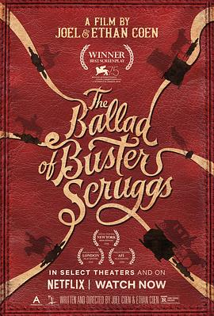

巴斯特·斯克鲁格斯的歌谣 / The Ballad of Buster Scruggs
又名：巴斯特民谣 / 巴斯特的歌谣 / 西部老巴的故事(台) / 细说当年话西部(港)
作品信息
| 导演 | 伊桑·科恩 / 乔尔·科恩 |
| 编剧 | 伊桑·科恩 / 乔尔·科恩 |
| 主演 | 哈利·米尔林 / 佐伊·卡赞 / 连姆·尼森 / 詹姆斯·弗兰科 / 大卫·克朗姆霍茨 / 汤姆·威兹 / 克兰西·布朗 / 蒂姆·布雷克·尼尔森 / 布莱丹·格里森 / 比尔·赫克 / 斯蒂芬·鲁特 / 泰恩·黛莉 / 拉尔夫·伊内森 / 切尔西·罗斯 / 绍尔·鲁宾内克 / 琼乔·奥尼尔 / 马修·维利希 / 杰西·卢肯 / 保罗·瑞 / 葛人杰·海恩斯 / 杰弗森·梅斯 / 山姆·狄龙 / 比利·洛克伍德 / 汤姆·普罗克特 / E·E·贝尔 / 丹尼·麦卡锡 / 杰克莫·巴泽尔 / 伊索·阿克瑞恩 |
| 类型 | 剧情 / 喜剧 / 爱情 / 悬疑 / 歌舞 / 西部 |
| 制片国家/地区 | 美国 |
| 语言 | 英语 |
| 上映日期 | 2018-08-31(威尼斯电影节) / 2018-11-16(美国) |
| 片长 | 133分钟 |
| IMDb | tt6412452 |
最后一次看到是 2026-08-12T21:12:07+08:00 · 豆瓣原页